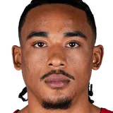

Played 3 seasons for 3 teams; his teams went 12–33 in his games.
Jump to: Record by opponent · Season by season · Teammate help
Compare Jared Rhoden with…
Final NBA finish, season by season
Title Finals Other playoffs Missed playoffs. #1 = champion; the dashed line is last place that season. Each point opens that season's final standings.
All 30 teams ranked in 2024-25, his best finish (#24)Teammate help
 Jaden Ivey0.11 season
Jaden Ivey0.11 season Jalen Duren0.11 season
Jalen Duren0.11 season
Career
Career records (W–L, W − L, with and without) include 2026-27 games through Nov. 24, 2026; season counts and finishes are through 2025-26. Each card opens its board in the same scope. How we count.

Latest completed seasons
Season by season
Newest first; every header sorts. Final NBA finish is the team's rank among all teams that season (#1 = champion) and opens that season's standings. "Without him" uses the team-season window; the span line counts only the games between his first and last game for the team.
| 2024-25 | #28 of 30 | 19–63 23.2% | Missed playoffs | 4 of 82 | 1–3 25.0% | 13–38 25.5%span: 2–1, gap −41.7 | −0.5 | |
| 2024-25 | #24 of 30 | 30–52 36.6% | Missed playoffs | 10 of 82 | 7–3 70.0% | 21–37 36.2%span: 6–8, gap +27.1 | +33.8 | |
| 2023-24 | #30 of 30 | 14–68 17.1% | Missed playoffs | 17 of 82 | 2–15 11.8% | 12–53 18.5%span: 10–52, gap −4.4 | −6.7 | |
| 2022-23 | #30 of 30 | 17–65 20.7% | Missed playoffs | 14 of 82 | 2–12 14.3% | 15–53 22.1%span: 4–21, gap −1.7 | −7.8 |
On/off, starts and close games
From the lineup data, 1996-97 on. On/off is net points per 100 possessions with him on the floor minus off, a different unit from the win-rate gaps. Started and off the bench are team records in those games; close games are those within 5 points in the last 5 minutes with him on the floor.
Teammate help by season
Help this season = Teammates Score points for honors won that season by teammates who shared a game with him, with every teammate that adds to it. Only honors won in that same season count. How help works.
- 2024-25
 CharlotteHelp this season: 0, no honored teammate
CharlotteHelp this season: 0, no honored teammate - 2024-25
 TorontoHelp this season: 0, no honored teammate
TorontoHelp this season: 0, no honored teammate - 2023-24
 DetroitHelp this season: 0, no honored teammate
DetroitHelp this season: 0, no honored teammate - 2022-23Detroit
Jaden Ivey All-Rookie 2nd0.12512 gJalen Duren All-Rookie 2nd0.1259 g
Help this season: 0.25 = 0.125 Jaden Ivey + 0.125 Jalen Duren
Other teammates (no honors that season): Cory Joseph 13 g, RJ Hampton 13 g, James Wiseman 13 g, Killian Hayes 12 g, Eugene Omoruyi 11 g, Marvin Bagley 9 g, Isaiah Livers 8 g, Buddy Boeheim 7 g, Rodney McGruder 6 g, Hamidou Diallo 3 g, Alec Burks 2 g, Nerlens Noel 1 g, Saddiq Bey 1 g, Kevin Knox 1 g
Record against each opponent
Regular season, through 2025-26 (2026-27 games not included): 45 games, 12–33, against 26 franchises.
Grouped by franchise (named as today); game lists keep each team's name that season. Filters and the tab are kept in the URL, so a filtered view can be shared.
| Games list | |||||||
|---|---|---|---|---|---|---|---|
| 4 | 1–3 | 25.0% | −2 | N/A | 2022-23 to 2024-25 | ||
| 4 | 1–3 | 25.0% | −2 | N/A | 2022-23 to 2024-25 | ||
| 3 | 1–2 | 33.3% | −1 | N/A | 2022-23 to 2024-25 | ||
| 3 | 0–3 | 0.0% | −3 | N/A | 2022-23 to 2024-25 | ||
| 3 | 3–0 | 100.0% | +3 | N/A | 2022-23 to 2024-25 | ||
| 3 | 1–2 | 33.3% | −1 | N/A | 2022-23 to 2024-25 | ||
| 2 | 0–2 | 0.0% | −2 | N/A | 2022-23 to 2024-25 | ||
| 2 | 0–2 | 0.0% | −2 | N/A | 2023-24 | ||
| 2 | 0–2 | 0.0% | −2 | N/A | 2023-24 to 2024-25 | ||
| 2 | 1–1 | 50.0% | 0 | N/A | 2023-24 to 2024-25 | ||
| 2 | 1–1 | 50.0% | 0 | N/A | 2022-23 to 2023-24 | ||
| 1 | 0–1 | 0.0% | −1 | N/A | 2022-23 | ||
| 1 | 0–1 | 0.0% | −1 | N/A | 2023-24 | ||
| 1 | 1–0 | 100.0% | +1 | N/A | 2024-25 | ||
| 1 | 1–0 | 100.0% | +1 | N/A | 2023-24 | ||
| 1 | 0–1 | 0.0% | −1 | N/A | 2024-25 | ||
| 1 | 0–1 | 0.0% | −1 | N/A | 2023-24 | ||
| 1 | 0–1 | 0.0% | −1 | N/A | 2022-23 | ||
| 1 | 0–1 | 0.0% | −1 | N/A | 2022-23 | ||
| 1 | 0–1 | 0.0% | −1 | N/A | 2023-24 | ||
| 1 | 0–1 | 0.0% | −1 | N/A | 2023-24 | ||
| 1 | 0–1 | 0.0% | −1 | N/A | 2023-24 | ||
| 1 | 0–1 | 0.0% | −1 | N/A | 2023-24 | ||
| 1 | 0–1 | 0.0% | −1 | N/A | 2023-24 | ||
| 1 | 0–1 | 0.0% | −1 | N/A | 2022-23 | ||
| 1 | 1–0 | 100.0% | +1 | N/A | 2024-25 |
Rows add up to his career record in his games. A playoff series counts when he played in it; early round-robin games show as games only. How we count.
Arrival and departure
Team wins per 82 games the season before he arrived vs his first season there, and his last season vs the season after he left. He leaves a team only when his next season with games is for another team (or he never plays again); whole seasons he missed and came back from are one "Missed" row with the team's record without him. Per 82 so short seasons compare fairly. These are team records, not a measure of what he did.
| Left | after 2024-25 | 2024-25: 19–63 19.0 per 82 | 2025-26: 44–38 44.0 per 82 without him | +25.0 wins | |
| Left | after 2024-25 | 2024-25: 30–52 30.0 per 82 | 2025-26: 46–36 46.0 per 82 without him | +16.0 wins | |
| Arrived | 2024-25 | 2023-24: 21–61 21.0 per 82 | 2024-25: 19–63 19.0 per 82 | −2.0 wins | |
| Arrived | 2024-25 | 2023-24: 25–57 25.0 per 82 | 2024-25: 30–52 30.0 per 82 | +5.0 wins | |
| Left | after 2023-24 | 2023-24: 14–68 14.0 per 82 | 2024-25: 44–38 44.0 per 82 without him | +30.0 wins | |
| Debut | 2022-23 | 2021-22: 23–59 23.0 per 82 | 2022-23: 17–65 17.0 per 82 | −6.0 wins |
Seasons split between teams
Each team's record before his first game for it, inside his window (games with and without him) and after his last game, in the seasons he played for two or more teams.
With and without his teammates
His 12 teammates with the most regular-season games together. "Together" is the team's record in the games both played for it; "Without him" is the team's record in the games Jared Rhoden played for that team while the teammate was on it (between the teammate's first and last game for the team, the appearance span) and the teammate did not play. Fewer than 20 games without him: no gap. Games through Nov. 24, 2026. How we count.
 James WisemanDetroit 2022-23 to 2023-24
James WisemanDetroit 2022-23 to 2023-24- Together
- 4–23 14.8%
- Without him
- 0–2 0.0%
- Gap
- Too few games without him
- Jaden IveyDetroit 2022-23 to 2023-24
- Together
- 3–21 12.5%
- Without him
- 1–6 14.3%
- Gap
- Too few games without him
- Jalen DurenDetroit 2022-23 to 2023-24
- Together
- 3–16 15.8%
- Without him
- 0–10 0.0%
- Gap
- Too few games without him
 Killian HayesDetroit 2022-23 to 2023-24
Killian HayesDetroit 2022-23 to 2023-24- Together
- 2–15 11.8%
- Without him
- 0–2 0.0%
- Gap
- Too few games without him
 Marcus SasserDetroit 2023-24
Marcus SasserDetroit 2023-24- Together
- 2–14 12.5%
- Without him
- 0–1 0.0%
- Gap
- Too few games without him
 Buddy BoeheimDetroit 2022-23 to 2023-24
Buddy BoeheimDetroit 2022-23 to 2023-24- Together
- 2–14 12.5%
- Without him
- 1–8 11.1%
- Gap
- Too few games without him
 Marvin BagleyDetroit 2022-23 to 2023-24
Marvin BagleyDetroit 2022-23 to 2023-24- Together
- 1–13 7.1%
- Without him
- 1–4 20.0%
- Gap
- Too few games without him
 RJ HamptonDetroit 2022-23
RJ HamptonDetroit 2022-23- Together
- 2–11 15.4%
- Without him
- N/A N/A
- Gap
- Too few games without him
 Cory JosephDetroit 2022-23
Cory JosephDetroit 2022-23- Together
- 2–11 15.4%
- Without him
- 0–1 0.0%
- Gap
- Too few games without him
 Troy BrownDetroit 2023-24
Troy BrownDetroit 2023-24- Together
- 1–10 9.1%
- Without him
- N/A N/A
- Gap
- Too few games without him
 Chimezie MetuDetroit 2023-24
Chimezie MetuDetroit 2023-24- Together
- 1–10 9.1%
- Without him
- N/A N/A
- Gap
- Too few games without him
 Eugene OmoruyiDetroit 2022-23
Eugene OmoruyiDetroit 2022-23- Together
- 1–10 9.1%
- Without him
- N/A N/A
- Gap
- Too few games without him